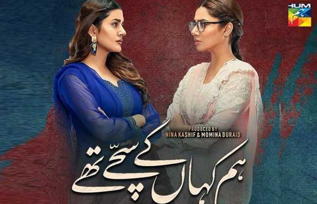

💣💣⚔️⚔️⚔️💣💣🔥🔥 Debate Warzone 🔥🔥💣💣⚔️⚔️⚔️💣💣
Is drama serial "HUM KAHA KAY SACHAY THAY"(When were we truthful?) worth all the recognition that it is getting?????
For = Immama Ayoub

I personally do beleive that this drama does actually deserve the recognition that it is getting now and it is also not "OVER POPULARIZED BEACUASE OF THE ACTORS" , the story itslef is simple but successfully accomplished to exhibit deep and intense emotions of jealousy, trust , and overall love. The actors themselves have done a great job delivering those emotions. Furthermore, this drama also talked about the afteraffects of childhood trauma and how parents relationship and household setting can deeply impact a child's mind in a negative way, leaving them with bad memeories instead of good ones. This drama also showed the negative impacts of child compariosn through the character "Mashal". Overall, this drama was really a good experience and it was fun to watch it.